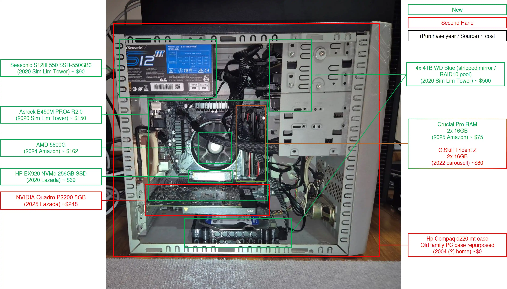

Debian Server
Runs containerized services using Docker Compose for self-hosted infrastructure, monitoring, content management, and development.
Uses a mix of zfs stripped mirroring of the 4x4 TB WD Blue drives in the machine and NAS storage
Originally I bought a SATA3 M.2 SSD for the boot drive, but due to motherboard limitations of how the chipset handles SATA (see storage) (i.e. M2_1 is PCIE only, M2_2 and SATA_3 shares data lanes and affected my striped mirror configuration) I had to swap to an NVMe drive in M2_1.

Hardware
- CPU: AMD Ryzen 5 5600G
- RAM: 64 GB DDR4
- Storage: 256 GB SSD
- Storage: 4x 4 TB SSD
Active Docker Services
- Shoko Server — Anime metadata manager and scraper
- Palworld — Dedicated game server
- Calibre & Calibre-Web — eBook management and web access
- Open WebUI — Frontend for AI model control (Ollama)
- Netdata — Real-time system monitoring
- Pi-hole & AdGuard Home — Network-wide ad/tracker blocking (dual setup)
- Unbound — Local DNS resolver backend
- Jellyfin — Media server for anime and videos
- Komga — Manga and comic book server
- Gitea — Self-hosted Git server (rootless)
- Ollama — Local LLM model backend
- Duplicati — Encrypted backups to TrueNAS and Cold Server
- Wiki.js — Markdown-based internal wiki
- Nginx — Reverse proxy for internal services
Services live on VLAN 10, some loose plan to migrate from 192.168.10.x to 10.x.x.x if I somehow run out of addresses.